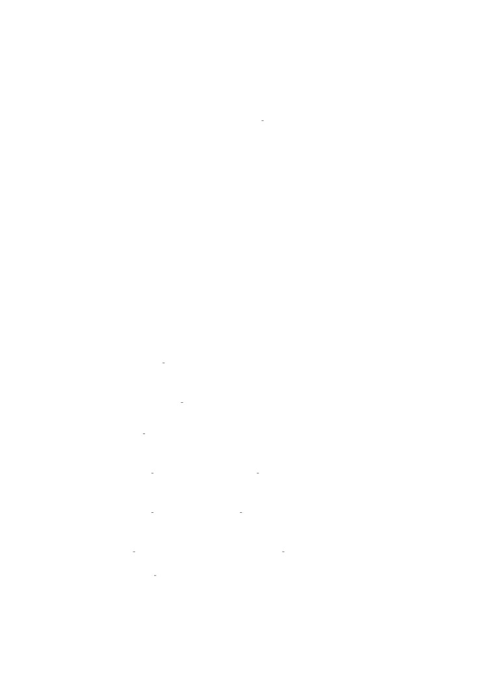
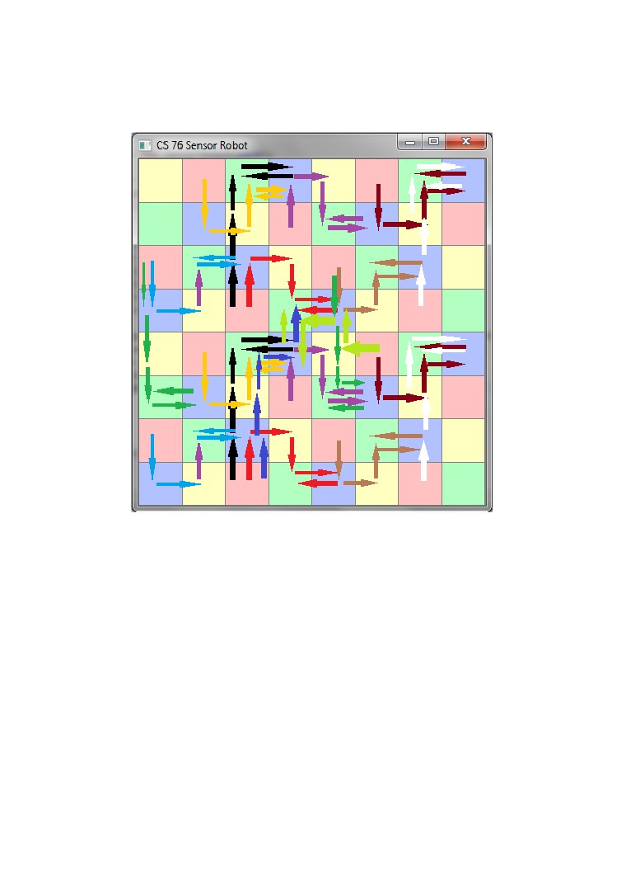

Probabilistic Reasoning Over Time
Jack Foster Terwilliger
March 8, 2014
1
Introduction
In partially observable noisy environments, an agent must make decisions de-
spite its incomplete and potentially incorrect knowlege of the state of the en-
vironment. In such cases, the agent must infer what is unobservable in the
environment from what is observable. In order to make use of its observations
for inference, the agent must also have prior knowlege about 1.) its environ-
ment: how the environment changes over time and 2.) how observations are
emitted by the environment and sensed by the agent.
In this paper I will explore the use of HMMs and the forward, forwardback-
ward, and Viterbi algorithms to solve a robot location problem given a partially
observable maze. In my code, I used the linear algebra java library, la4j.
2
Sensor Robot Problem
In the Sensor Robot Problem, a color sensing robot is placed in a maze with
colored tiles and must locate its position in the maze. The robot is given a
sequence of observations from its sensors (which are prone to error) and knowl-
ege of the maze. It uses this information as evidence to form a probabilistic
distribution over possible locations.
Let’s rephrase this in HMM terms. The robot is given a transition model T
from it’s knowlege of the layout of the maze, an observation model O from its
knowlege of the coloring of the maze, and a sequence of observations E1:t picked
up from its sensors after moving around in the maze, and it must use the given
to determind Xt, the set of state variables at time t.
Now let’s rephrase this in probablistic terms. The set of state variables (the
legal locations in the maze) will be represented as Xt and the set of state emis-
sions (the colors of the maze tiles) as Et. The transmission model T determins
probability distribution over current state variables given past state values. T
can be represented as
P (Xt|X0:t−1).
(1)
However this can be simplified based on a Markov Assumption, which states
that the current state is only depenant on the immidiately previous state. This
can be rephrased as
P (Xt|Xt−1)(M arkovAssum.),
(2)
which unlike the former statement, does not grow in size with time.
1
The observation model O determines a probability distribution over emission
values given past states and emissions.O can be represented as
P (Et|X0:t, E1:t−1).
(3)
However, we can make a similar assumption about O as T , that is emissions are
only dependant on the state at time T . O can be rephrased as
P (Et|Xt)(M arkovAssum.)
(4)
So with O and T , the joint probability of the state is
P (X0:t, E1:t) = P (X0)P (X1|X0)P (E1|X1)...P (Xt|Xt − 1)P (Et|Xt)
(5)
or more concicely,
∏
P (X0:t, E1:t) = P (X0) P (Xi|Xi − 1)P (Ei|Xi)
(6)
i=1
With the above, the location task in the Sensor Robot Problem can be defined
as calculating the expression:
P (Xt|E1:t).
(7)
Figure 1: Hidden Markov Model
2.1
Maze Representation
The maze is represented as a 2d character array wrapped in a maze class.
Maze.java from the mazeworld assignment was modified to serve this pur-
pose.Mazes are written as .maz files. Walls are represented with Xs and the
colors red, green, blue, yellow are represented respectively as r,g,b,y.
2
the following is a
4x4
maze with
3
walls:
rXbg
bXrX
ybrg
ybrg
2.2
Transition Model
The transition model is represented as a SxS Matrix where S is the number of
state variables such that
Tij = P(Xt = j|Xt−1 = i).
(8)
By representing only the legal locations, time and memory is saved when calcu-
lating probability distributions. I used the la4j library to implement the Matrix.
T is generated automatically from a provided maze by the following method.
1
//create the transition model from an ascii representation of the
maze
2
//Each entry is : T (ij)
= P(X (t) = j
| X
(t−1) = i)
3
//
4
//SxS where S is the number of variables
5
//
X1
X2
X3
6
//X1[P( x1 | x1 ) ] [ P( x1 | x2 ) ] [ P( x1 | x2 ) ] . . .
7
//
8
//
9
//X2[P( x2 | x1 ) ] [ P( x2 | x2 ) ] [ P( x1 | x2 ) ] . . .
10
//
11
//
12
//X3[P( x3 | x1 ) ] [ P( x3 | x2 ) ] [ P( x1 | x2 ) ] . . .
13
//
14
//
15
//X4[P( x4 | x1 ) ] [ P( x4 | x2 ) ] [ P( x1 | x2 ) ] . . .
16
//...
17
private Matrix transitionModel(){
18
19
//Key = set of locations Value = set of neighbors
20
Hashtable<Integer , HashSet<Integer>> topography= getTopography () ;
21
22
//size is number of variables x number of variables
23
//i
= Xt−1, j = Xt
24
double [][] transition probabilities
= new double [ variables . length
][];
25
26
//get P(X t|X t−1) for every variable pair
27
int i=0;
28
for
(int variable: variables){
29
transition probabilities [ i ]
= new double [ variables . length ] ;
30
31
int j=0;
32
for
(int pastVariable: variables){
33
34
//get P(X t|X t−1)
35
//put it in the matrix
36
transition probabilities [ i ][ j]
= getTransitionProbability(
pastVariable , variable , topography);
37
j ++;
38
}
39
i ++;
3

40
}
41
return new Basic2DMatrix(transition probabilities);
42
}
2.3
Observation Model
The observation model is represented as an array of SxS diagonal Matrices where
S is the number of state variables such that
Oi = P(et|Xt = i)
(9)
. Each matrix corresponds to an emission variable and the contents of each
matrix correspond to the probability of emission by the state variable. I used
the la4j library to implement the Matrices.
O is generated automatically from a provided maze by the following method.
1
//build the observation model
2
//a list of matrices
3
//each matrix contains the probabilities that a state would emit
the given observation variable
4
//the matrices are diagonal so that we can do matrix multiplication
with the transition model
5
//SxS where S is the number of variables
6
//
X1
X2
X3
X4
7
// X1[ p1 ][0
][0
][0
]
8
// X2[0
][p2][0
][0
]
9
// X3[0
][0
][p3][0
]
10
// X4[0
][0
][0
][p4]
11
private Matrix[] observationModel(){
12
Matrix [ ] obs mod = new Matrix [COLORS. length ] ;
13
14
15
int index=0;
16
for
(char color
: COLORS) {
17
double [][] obs matrix
= new double [ variables . length ] [ ] ;
18
int i=0;
19
for
(int variable:variables){
20
21
obs matrix[ i ]
= new double [ variables . length ] ;
//create
an
array full of
0s
22
23
//if its a true reading
24
if
(maze . getChar ( variable )
== c o l o r ) {
25
obs matrix[ i ][ i ]
= 1 − error rate ;
26
}
27
28
//if its an error
29
else{
30
obs matrix[ i ][ i ]
= error rate /(COLORS. length −1) ;
31
}
32
i ++;
33
34
}
35
obs mod[index]
= new Basic2DMatrix ( obs matrix ) ;
36
index++;
37
}
38
return obs mod;
39
}
4
2.4
Sensor Robot Representation
SensorRobot.java extends the abstract class ProbabilisticReasoningAgent.java.
The state is represented within ProbabilisticReasoningAgent.java as an Ar-
rayList of Vectors of length S, where each index is the beliefstate at time t,
S is the number of state variables and each entry is the probability of being at
a particular location.
ProbabilistingReasoningAgent.java:
1
//transition and observation models are represented as a lists of
matrices , which are instantiated in concrete classes
2
3
private Matrix transition model;
//#v a r i a b l e s x #v a r i a b l e s
4
private Matrix[] observation model;
//list of diagonal matrices
each matrix corresponds to an observation model for a
particular observation value
#v a r s x #v a r s
5
6
public ArrayList<Vector> state ;
//probability distribution of
state variables over time
SensorRobot contains representations of other useful bits of information in
addition to beliefstate. It stores a char array of possible observation values.
Since, ProbablisticReasoningAgent represents variables as ints, we pass the value
of the color’s index to it. And it stores the error rate of the sensors.
In addition to the above mentioned transition and observation model builders,
SensorRobot contains generateRandomMoves(int num) and generateObserva-
tions(int[][] path, boolean toErrr). generateObservations returns a sequence of
observations which may or may not contain errors proportional to the error rate
depending on whether boolean toErrr is triggered.
SensorRobot.java
1
//the set of robot moves
2
private static int [ ] [ ] MOVES =
{{1,0},{0,1},{−1,0},{0,−1}};
3
4
//the set of possible colors
5
private final char [ ] COLORS = { ’ r ’ ,
’g’ ,
’b’ ,
’y’};
6
7
//the max numbers of neighbors per location
8
private final double NUM NEIGHBORS = 4;
9
10
//the sensor error rate
11
private double error rate ;
12
13
private Maze maze;
//the robot knows the layout of the maze
14
15
public int [] variables;
//the list of variables and their locations
in the maze
16
17
// construct the HMM based off the maze
18
public SensorRobot (Maze m){
19
20
maze = m;
21
22
error rate
= .12;
23
24
//Construct the models from the maze
25
setVariables();
26
setT(transitionModel());
27
setO(observationModel());
28
setState(variables.length);
5
29
}
30
31
//Generate a random set of moves −− a l i s t of coordinates
32
public int [ ] [ ] generateRandomMoves( int num){
33
Random random = new Random ( ) ;
34
35
int [][] path
= new int [num ] [ ] ;
36
37
int var
= variables[random.nextInt(variables.length) ];
38
path[0]
= new int [ ] { var%maze . width , var/maze . width };
39
40
for
( int i =1; i< num; i++){
41
int [ ] move = MOVES[ random . nextInt (MOVES. length ) ] ;
42
int newx = path[i −1][0]
+ move [ 0 ] ;
43
int newy = path[i −1][1]
+ move [ 1 ] ;
44
if(maze.isLegal(newx, newy)){
45
path[ i ]
= new int [ ] { newx , newy };
46
}
47
else{
48
path[ i ]
= path[i −1];
49
}
50
}
51
return path;
52
}
53
54
//from a robot path, generate a list of observations
55
//parameters: boolean errr . if true the sensor will err
56
public int [] generateObservations(int [][] path, boolean
toErrr){
57
int [] observations
= new int [ path . length ] ;
58
59
if
(!toErrr){
60
int i=0;
61
for
(int [] location:path){
62
char c
= maze . getChar ( location [ 0 ] , location [ 1 ] ) ;
63
64
observations[ i ]
= getCharInt(c);
65
i ++;
66
}
67
return observations;
68
}
69
70
Random random = new Random ( ) ;
71
72
int i=0;
73
for
(int [] location:path){
74
char c
= maze . getChar ( location [ 0 ] , location [ 1 ] ) ;
75
76
double error
= random . nextDouble () ;
77
System.out.println(error
+ ” ” + error rate);
78
//get the correct observation
79
int charval
= getCharInt(c);
80
81
//Generate a random error
82
if
(error
< error rate){
83
int errorchar
= charval;
84
while
(errorchar
== c h a r v a l ) {
85
errorchar
= random . nextInt (COLORS. length −1) ;
86
}
87
observations[ i ]
= errorchar;
88
}
89
else{
90
observations[ i ]
= charval;
6
91
}
92
93
94
i ++;
95
}
96
return observations;
97
}
3
Filtering
Filtering is the process of computing the belief state at the current time t, given
previous observations - that is computing expression (7). However, it is best to
look at filtering as a process of updating the belief state. This way, the filtering
algorithm needs not compute the belief state from 0:t every time the agent wants
to compute its current belief state, but rather build off previous calculations.
Thus we rewite expression (7) as a function of an updating filtering algorithm:
P (Xt+1|e1 : t + 1) = f (e1:t+1, P (Xt|e1:t))
(10)
3.1
Forward Algorithm
The Forward algorithm can be seen as a recursive algorithm which teases the
P (Xt+1|e1 : t + 1) into something calculatable, by eumerating it into a set of
expressions defined by the models T and O.
P (Xt+1|e1:t+1) = P (Xt+1|e1:t, et+1)(splittingtheterm)
= αP(et+1|Xt + 1,e1:t)P(Xt+1|et + 1)(Bayes)
= αP(et+1|Xt + 1)P(Xt+1|e1 : t)(MarkovAssum.)
∑
= αP(et+1|Xt + 1)
xt P(Xt+1|xt,e1:t)P(xt|e1:t)(JointProbability)
∑
= αP(et+1|Xt + 1)
xt P(Xt+1|xt)P(xt|e1:t)(MarkovAssum.)
(11)
The filtering expression has been enumerated from P (Xt+1|e1:t+1) to several
terms held in the model (P (et+1|Xt + 1) = Oi and P (Xt+1|xt) = Tij ) and α,
a normalizing constant. As for P (xt|e1:t), which is not in the model, it is the
belief state at the previous time slice! If it is defined as f orward1:t, the value
returned from a previous iteration, then filtering can be defined as a recursive
algorithm which computes the distribution over state variables from time 1 to
t. This is the Forward algorithm:
∑
f orward1:t+1 = αP (et+1|Xt + 1)
xt P(Xt+1|xt)P(xt|e1:t)
= αOt+1TT forward1:t(matrixmultiplication)
(12)
= αFORWARD1:t+1(forward1:t,et+1)(substitution)
The Forward algorithm’s time complexity grows linearly with time. Since, it
only needs to keep track of the previous step it only requires constant space.//
In my implementation of the forward algorithm, I used matrices to represent
T and O.
1
7
2
//Compute the Belief State at time t: P(State
0:t|
sequenceOfObservations 1:t)
3
//
4
//returns a sequence of belief states at each step of the
observation
5
//parameters: int [] obs is the sequence of observations
6
public ArrayList<Vector> f i l t e r ( int [ ] obs ){
7
ArrayList<Vector> forward vector
= new ArrayList<Vector >() ;
8
forward vector.add(state.get(0));
9
return forward(forward vector.get(0) , obs, forward vector ,
0,
false);
10
}
11
12
private ArrayList<Vector> forward ( Vector prev forward , int [ ] obs ,
ArrayList<Vector> state to t , int t , boolean isFB){
13
//Base Case
14
if
(t
>= o b s . l e n g t h ) {
15
return state to t ;
16
}
17
18
//Recursive Case
19
Vector current
= null;
20
//not used for
forward backward, normalize
21
if
(isFB == false ){
22
//new matrix = a∗O∗Transpose (T) ∗( prev forward )
23
current
= normalize(getO(obs[t]) .multiply(getT()).multiply(
prev forward));
24
}
25
else{
26
//new matrix = a∗O∗Transpose (T) ∗( prev forward )
27
current
= getO(obs[t]) .multiply(getT()).multiply(prev forward);
28
}
29
30
state to t .add(current);
31
32
//recursiveCall
33
return forward(current , obs, state to t , t+1, isFB);
34
}
3.2
Filtering Results
The following is a table of the probability distribution over locations. Each
cell in the table represents a location at a specified time. At time t=0, the
distribution is uniform, representing that the robot has no idea where it is. At
time t=1 the robot senses the presence of red and updates the belief state and
so on.
Maze :
rg
by
8
Figure 2: Table of probability distribution over locations
The following is a graphical presentation of the same results as Figure 1.
Balkcom’s head represents the true location of the robot at time t. The black
bars represent the probability distribution at each location. The hight of the
bar represents the probability value. 1 = a bar that spans the entire hight of a
tile. .5 = a bar that spans half the hight of a tile and so on.
9
Figure 3: 2x2 Maze Filtering X0:t
However, Filtering is not always accurate. Sometimes the most probable
location given a sequence of observations is not the actual location! At times
t=8 and t=9 the most probable location is different than the actual location.
At t=8, this is because the red tile between the walls has a higher probability
(.5)of transitioning into itself than to the red tile adjacent it (.25). Thus, the
calculation at t=8 carries over to t=9.
Figure 4: 4x4 Maze Filtering X1:t
4
Smoothing
Smoothing is the process of computing the belief state at a past time k, given
every observation up to the current time t where 0 < k < t:
P (Xk |e1:t)
(13)
10
4.1
Forward-Backward Algorithm
Expresssion 13 can be split into two expressions, one which is the Forward
algorithm the other is the Backward algorithm:
P (Xk |e1:t) = αP (Xk |e1:k )P (ek+1:t|Xk , e1 : k)(Bayes)
= αP(Xk|e1:k)P(ek+1:t|Xk)(condit.Indepenanceseefig.1)
(14)
= αforward1:k(x)backwardk+1:t
Whereas the forward algorithm computes the probability distribution over
state variables given a sequence of observations, the backwards algorithm com-
putes the probability of a sequence of observations given probability distribu-
tions over state variables.
∑
P (ek+1:t|Xk ) =
xk+1 P(ek+1:t|Xk,xk+1)P(xk+1|Xk)(JointProbability)
∑
=
xk+1 P(ek+1:t|xk+1)P(xk+1|Xk)(condit.Independanceseefig.1)
∑
=
xk+1 P(ek+1,ek+2:t|xk+1)P(xk+1|Xk)(seperatingobservations)
∑
=
xk+1 P(ek+1|xk+1)P(ek+2:t|xk+1)P(xk+1|Xk)
(condit.IndpOf ek+1Andek + 2Givenxk+1)
(15)
Like in the forward algorithm, the expression has been enumerated from
P (ek+1:t|Xk ) to several termsin the transition and observation models (P (ek+1|xk+1) =
Oi and P(xk+1|Xk) = Tij). As for P(ek+2:t|xk+1), which is not known in the
models, it is expression at the next time step! Thus, the backward algorithm can
be defined as a recursive algorithm that probagates its message, backwardk+1:t,
backwards from t to k:
∑
backwardk+1:t =
xk+1 P(ek+1|xk+1)P(ek+2:t|xk+1)P(xk+1|Xk)
= TOk+1backwardk+2:t(matrixmultiplication)
= B ACKWARDk+1:t(backwardk+2:t,ek+1)(substitution)
(16)
The forwardbackward algorithm is much more accurate than just the forward
algorithm. However, the forwardbackward algorithm is not as memory efficient.
Its space complexity is O(f t) where f is the size of the forward message and t
is the number of time steps.
In my implementation of the forwardbackward algorithm, I used matrices
1
2
//Compute the Belief State at time k: P(State
0:k|
sequenceOfObservations 1:k)∗PsequenceOfObservations k+1:t|
State k+1:t)
3
//
4
//returns a sequence of belief states at each step of the
observation
5
//parameters: int [] obs is the sequence of observations
6
public ArrayList<Vector> smoothing ( int [ ] obs ){
7
return forwardBackward(obs);
8
}
9
10
//Compute the Belief State at time k: P(State
0:k|
sequenceOfObservations 1:k)∗PsequenceOfObservations k+1:t|
State k+1:t)
11
11
//
12
//returns a sequence of belief states at each step of the
observation
13
//parameters: int [] obs is the sequence of observations
14
private ArrayList<Vector> forwardBackward( int [ ] obs ){
15
16
ArrayList<Vector> forward vectors
= new ArrayList<Vector >() ;
17
forward(state.get(0) , obs, forward vectors ,
0, true);
18
19
ArrayList<Vector> backward vectors = new ArrayList<Vector >() ;
20
21
//backwards algorithm starts with a vector filled with ones
22
double [] firstBack
= new double [ state . get (0) . length () ] ;
23
Arrays. fill (firstBack ,
1.0);
24
backward vectors.add(0,new BasicVector(firstBack));
25
26
backward(backward vectors.get(0) , obs, obs.length−1,
backward vectors , true);
27
28
for
( int i =0; i<obs . length ; i++){
29
state.add(normalize(forward vectors.get(i).hadamardProduct(
backward vectors.get(i))));
30
}
31
return state;
32
}
33
34
private ArrayList<Vector> backward( Vector prev backward , int [ ] obs ,
int t , ArrayList<Vector> state to
1 , boolean isFB){
35
//Base Case
36
if
(t
< 1){
37
return state to
1 ;
38
}
39
40
//Recursive Case
41
42
Vector current
= null;
43
if
(isFB
!= true ){
44
//new matrix = a∗T∗O∗( prev backward )
45
current
= normalize(getT().multiply(getO(obs[t])).multiply(
prev backward));
46
}
47
else{
48
//new matrix = T∗O∗( prev backward )
49
current
= getT().multiply(getO(obs[t])).multiply(prev backward)
;
50
}
51
52
state to
1 .add(0, current);
53
54
//recursiveCall
55
return backward(current , obs, t−1, state to
1 , isFB);
56
}
4.2
Smoothing Results
The following is a table of the probability distribution over locations. Each
cell in the table represents a location at a specified time. At time t=0, the
distribution is uniform, representing that the robot has no idea where it is. At
time t=1 the robot senses the presence of red and updates the belief state and
so on.
12
Excluding the belief states at time = 0 and time = t, the forward backward
algorithm is much more accurate than the forward algorithm. At time = 0 and
time = t, the distributions returned from forward-backward and forward are
exactly the same. Looking at Figures 1. and 5. shows this is true.
Figure 5: 2x2 ForwardBackward
The following is a graphical presentation of the same results as Figure 5.
13
Figure 6: 2x2 ForwardBackward
5
Forward vs. ForwardBackward
5.1
Accuracy
In many cases, filtering makes mistakes. At time k, it makes many more mistakes
than smoothing. For example, at time = 8 the robot believes it is on the red
tile between the walls. This is because the filtering gets no information from
observations made after k.
Figure 7: 4x4maze filtering: pobability distribution of locations
14
Figure 8: 4x4maze smoothing: pobability distribution of locations
5.2
Dealing with a Noisy Channel
Since the sensors of the robot are prone to error, it is important to have al-
gorithms which can deal with error. This error is treated as a noisy channel,
and the error rate is accounted for in the observation model. First, in figures
11 and 12, results from filtering and smoothing respectively of a sequence of
observations with no error are shown.
Figure 9: Filtering: no errors in observation sequence
15
Figure 10: Smoothing: no errors in observation sequence
However, in figures 13 and 14 there is an error at time = 1. Instead of reading
yellow, the robot reads red. With filtering, not only, does the distribution not
make an accurate inference afterword, but the distribution is not even clustered
around the actual distribution. However, with smoothing, the distribution re-
covers after the erronious sensor reading. And, even at the erronious time step,
the distribution is clustered around the actual location.
Figure 11: Filtering: 1 Error at time t=1
16
Figure 12: Smoothing: 1 Error at time t=1
My results suggest that filtering should be used only to update and predict
states in the future. To infer the belief state at previously observed timeslices,
Forward-Backward should be used.
6
Most Likely Path
To calculate the most likely path taken, the robot must find the most likely
path to the most likely variable at time t+1.
maxx1:t P (x1:t, Xt + 1|e1:t+1)
(17)
6.1
Virterbi Algorithm
The Viterbi Algorithm computes expression 17. An interesting perspectve of
the Viterbi Algorithm is to view it as modified breadth first search, where the
depth is defined by time, the goal is defined by argmaxxP (Xt+1|et+1), and the
get neighbors function is a modified filtering update function.Thus:
maxx1:t P (x1:t, Xt + 1|e1:t+1)
(18)
= αP(et+1|Xt+1)(P(Xt+1|xt)maxx1:t−1P(x1:t−1),xt|e1:t)
Viterbi, like filtering takes linear time. But unlike filtering, which only re-
quires constant space, Viterbi’s memory usage grows linearly with time, because
it has to keep track of back pointers.
1
//Compute the Most Likely Path through the state space given a
sequence of observations
2
//
3
//I didn’t use la4j in Viterbi
4
//
5
//returns an array of ints representing state variables
6
//parameters: int [] obs is the sequence of observations
7
public int [] mostLikelySequence(int [] obs){
17
8
//initialize state at t0:
9
double [] start probability
= new double [ transition model . rows () ] ;
10
Arrays. fill (start probability ,
1);
11
return viterbi(obs,
0, start probability , new int[obs.length ][]) ;
12
}
13
14
//Recursive Viterbi: At time t, find the most probable path for
every state variable from t−1
to t
15
//
16
//returns the most likely path through the state space
17
//parameters: int [] obs the sequence of observations , int t the
current time slice t,
18
//double [] past probabilities the probability distribution of state
variables at time t−1, int [][] viterbiPath set of backPointers
for every t
19
private int [] viterbi(int [] obs, int t, double [] past probabilities
, int [][] viterbiPath){
20
21
//Base Case
22
23
//backtrack through the set of backpointers
24
if
(t
>= o b s . l e n g t h ) {
25
return backtracking(viterbiPath , past probabilities);
26
}
27
28
//Recursive Case
29
30
//get Ot
31
Matrix obs mod = observation model[obs[t ]];
32
33
//new set of backpointers and set of probability distribution
over state variables
34
int [] subPath
= new int [ p a s t p r o b a b i l i t i e s . length ] ;
35
double [] current probabilities
= new double [ p a s t p r o b a b i l i t i e s .
length ];
36
37
// for every variable x t , get the max P( x1
t|X t−1)
38
for
(int state variable current=0; state variable current<
transition model . rows () ; state variable current++){
39
40
int max = 0;
//the max variable
41
double max prob = 0;
//the max probability
42
double full prob
= 0;
43
44
// for every variable x t−1
45
for
(int state variable past=0; state variable past<
transition model . columns () ; state variable past++){
46
47
double probabilityOfstate variable
= transition model.get(
state variable current , state variable past)∗obs mod.get(
state variable current , state variable current)∗
past probabilities [ state variable past ];
48
49
if
(probabilityOfstate variable
> max prob){
50
max = s t a t e v a r i a b l e p a s t ;
51
max prob = probabilityOfstate variable ;
52
}
53
full prob
+= p r o b a b i l i t y O f s t a t e v a r i a b l e ;
54
55
}
56
57
//add backpointer
18
58
subPath[ state variable current ]
= max ;
59
60
//The On the last iteration , get the combined probability
of a state.
61
//this way viterbi chooses the most likely path to the most
likely state at t
62
if
( obs . length −1 == t ){
63
System.out.println(state variable current
+ ” ” + max prob);
64
//add max P( x t | X t−1)
65
current probabilities [ state variable current ]
+= f u l l p r o b ;
66
}
67
else{
68
current probabilities [ state variable current ]
= max prob;
69
}
70
71
}
72
viterbiPath[t]
= subPath;
73
74
//recurse
75
return viterbi(obs, t+1, current probabilities , viterbiPath);
76
}
77
78
//Backtrack through the most likely path
79
//at each time t, a variable points backward to which state most
likely transitioned to it
80
//
81
//returns int [] path. an array of ints representing the most likely
path through state space
82
//parameters: viterbiPath is the set of backpointers at every time
t, double [] past probabilities the distribution of state
variables over time t
83
private int [] backtracking(int [][] viterbiPath , double []
past probabilities){
84
//System.out.println(past probabilities [26]
+ ” ” +
past probabilities [7]
+ ” ” + past probabilities[9]+
”
” +
past probabilities[13]+
”
” + past probabilities[16]+
”
” +
past probabilities [20]
+ ” ” + past probabilities [35]) ;
85
int [] path
= new int [ viterbiPath . length ] ;
86
87
//Find the most probable state at time t
88
//we will backtrack through the path that let to this state
89
int max = 0;
90
double max prob = 0;
91
for
( int j =0; j<past probabilities . length ; j++){
92
if
(max prob<past probabilities [j ]){
93
max = j ;
94
max prob = past probabilities [j ];
95
}
96
}
97
98
99
path[viterbiPath.length−1]
= max ;
100
return backtracking(viterbiPath , viterbiPath.length−1, path);
101
}
102
103
//Backtrack through the most likely path
104
//at each time t, a variable points backward to which state most
likely transitioned to it
105
//
106
//returns int [] path
107
//parameters: viterbiPath is the set of backpointers at every time
t,
19
108
private int [] backtracking(int [][] viterbiPath , int t, int [] path){
109
110
//Base Case
111
if
(t
== 0 ) {
112
return path;
113
}
114
115
//recursive case
116
path[t−1] = viterbiPath[t ][path[t ]];
117
return backtracking(viterbiPath , t−1, path);
118
119
}
6.2
Viterbi Results
The Viterbi algorithm doesn’t always find the actual path taken by the robot.
In cases where there are two equi-probable paths, the viterbi algorithm has no
tie breaker method, and returns one of the equi-probable with not particular
discresion. Figure 15 shows the true path of the robot. Figure 16 shows the
path returned by Viterbi, and that the path returned by Viterbi was equally as
probable as the path taken.
Figure 13: path taken
20
Figure 14: viterbi path
Figures 17 and 18 show a similar phenomenon as figures 15 and 16. In this
case, the robot finds it’s way to the appropirate end tile, but on it’s way instead
of moving on an upward path along the red tiles, it starts and remains on the
red tile between the two walls.
21
Figure 15: path taken
Figure 16: viterbi path
The maze in figures 19 and 20 is very redundant. Each quadrant is identical.
22
Viterbi has a particularly difficult time finding the actual path taken by the
robot in redundant state spaces.
Figure 17: path taken
Note the probability distribution at time t. It is not concentrated on one
tile. Rather it is spread accross all green tiles. All but one tile has a path to it
which fits the observation sequence.
23
Figure 18: viterbi path
Figure 21 illustrates the number of paths through the maze.
24

Figure 19: vizualization of most paths in maze given the observations
7
Conclusion
Using HMMs, the robot was able to udate its belief state of location in the
maze very efficiently, with good accuracy using filtering. When looking at past
states, the robot was able to determine its location with great accuracy with
some sacrifice of memory using the forward-backward algorithm. And it was
able to find a path maximized over the probability of locations over time Viterbi.
While prone to errors, using HMMs to infer the unobservable location of the
robot in the maze was powerful given the low time complexities with respect to
time.
8
References
Russell, Stuart J., and Peter Norvig.
”Chapter 15 Probabilistic Reasoning
Over Time.” Artificial Intelligence: A Modern Approach. Upper Saddle River:
25
Prentice-Hall, 2010. N. pag. Print.
26